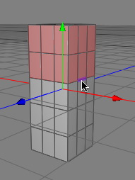

Edge Rotate Tool
The edge rotate tool is a very specialized tool for rotating point, edge or polygon selections around an existing polygon edge. The images below should describe its functioning quite well.

Modes
The edge rotate tool is available in point, edge and polygon mode and can only be applied to raw polygon objects.


Depending on the mode in which you are select some points, edges or polygons with the select tool. Now choose the rotate edge tool from the menu. Move the mouse cursor over the polygon edge around which you want to rotate the selection. The edge should now be highlighted by Cheetah3D (see image 1). Now you only have to drag the mouse either to the left or to the right to rotate the selection around the highlighted edge.
Keys
- none
Properties
- Quantize angle: With this property you can choose the step size used for rotating the point, edge or polygon selections.